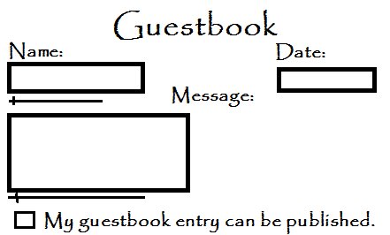
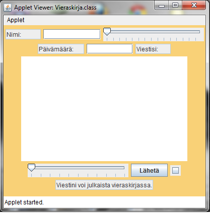
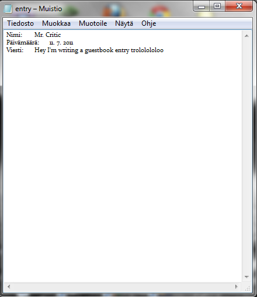
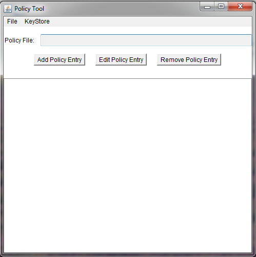
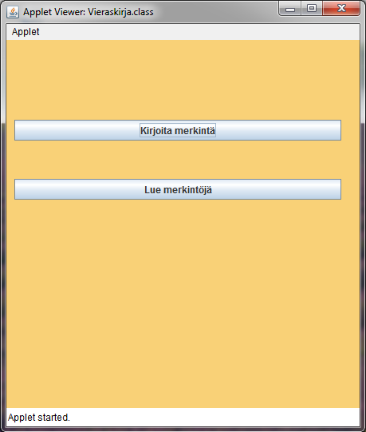
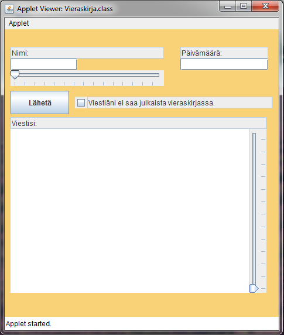

|
The Projects -page works for me as a development blog featuring kind of bigger programs, and every program gets its article flavoured with pictures. |
Project: GuestbookATTENTION! This project is not finished, and it will not be continued in a while, due to the problems. 10th of July 2011 I thought a while ago, that our website would need a way of communicating between the admin and the visitors, of course in addition to the Feedback -section. I know that the visitor count isn't the best(about 5-10 unique visitors per day) and it is kinda weird that I'm talking to nonexistence, but who knows, maybe all the new things shoot the visitor count high! :D So, I got this idea, that hey, lets make a guestbook! It's an easy way to the visitor to add her/his own mark to the website and I bet the admin has great time reading the entries, too. The guestbook can be easily made with Java applets(I hope), what doesn't need the clumsy old e-mail form feedback. If I made it with Java, I would also eliminate the pain of my empty brain, because I haven't had any good programming ideas for a while, and that would cure that. The guestbook would be a different type of program, fresh, with new challenges to overcome. Now when I'm done with teh blabber, I can go to the good stuff. Here is a very simplified picture of the guestbooks layout:  Those cross-shaped things are sliders, which can be used to change the size of different textfields. In this particular program it would mean, that a person whos name is very long, for ex. Aatami-Eemeli Ahterinmäenjorpakko(Don't ask where that came from :D) whose name wouldn't fit the default-sized textfield, could change the size of the field, making it look clearer and prettier. Same thing with the message, if someone decides to write a novel to that tiny textarea, he could simply resize the area to look at least a bit clearer. Otherwise, the program is very simple. You write your name/nickname, the date, the message itself, choose if you want to publish your entry on the page, play with the sliders for three hours and press the "Send" -button(which doesn't show up on the picture). After this the program saves your entry to a file, which includes all the entrys made before and after, and the website displays the updated file on the page. Thats it. Then I go read it and I might even answer it, who knows...? :D 11th of July 2011 Okay, I managed to continue this project already today, and it made some very good progress(maybe too good!?) I finished up the basic elements, which were the textfields, those sliders, the "Send" -button, and the checkbox whether you want to publish your post or not. I decided to choose orange to the background color and I tried to organize the elements, but because it's an applet its a bit different, so I ran into some problems, and I'm going to do the organizing later. Anyway, here's a picture of the current product: It might not look good now, but I promise it will later on! :D Surprisingly, I managed to make the Send -button work, so it saves the contents of all the text fields to a "entry" -file, when it is pressed. Here is a pic of the result, when a random person tried the beta -stage guestbook: Altogether, I made some very nice progress today, we will see if I'm able to continue this tomorrow or later on... :) 6th of August 2011 Hello again everyone, it's been a while since the last update, because I've been in a hurry. But now, when the schools begin here in Finland, ironically enough, I think I manage to continue the programming and web design again. Now, here's a little update what has been going on lately with the project. So, I made it pretty ready back in July, but when I tested the program in a browser, I got a bunch of errors. It was working fine in the Eclipse applet viewer, but in the browser, byrocracy punched me right into my face. You see, every applet, which wants to edit or read files that are outside the program, needs a permission from the user, also known as you. Those who have played in their youth for example RuneScape(lol), know what I'm talking about. It asks you to accept a little applet thingy, and you grant Jagex to add to your hard drive a Jagex cache thingy. But let's not talk about that. Neverthless, I started to think and search the web, how to give those permissions to the applet. I find something called policytool, what can be found writing "policytool" to the command line. With the policytool, you can grant all your programs or just that spesific one rights to write to, read from, delete files etc. Anyway, when I used policytool, two things weren't right. Firstly, all the users would have to make their own policies, and if we are talking about big masses, that just wouldn't be possible. Secondly, it just doesn't work! :D Everytime I make a new policy, and it doesn't matter how accurately I made it, it just fails to give the applet its rights, and the program continues to abuse me with exceptions about it not having acces to the files. But I believe that some day soon I'll find a good solution. Finally some pics about the program itself: In the main menu the user chooses whether she/he wants to write or read entries. This is how the writing side looks like. The readind side is still under heavy construction, but I promise I'll finish it up soon enough! :) 8th of August 2011 Unfortunately I have to leave this project unfinished, because after a massive fight with those certificates, I finally managed to overcome that problem, but then I faced another one, that is too hard to solve with my skills, and it would need some CGI -scripts, too. Therefore we let this project wait until the time that I can write CGI and am a bit more skillfull with Java. I will be updating the project -page while I'm doing the guestbook, I will publish screenshots, too! *wink wink* |
© Aapo Kiiso 2011